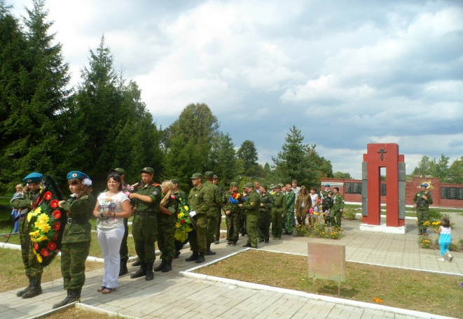
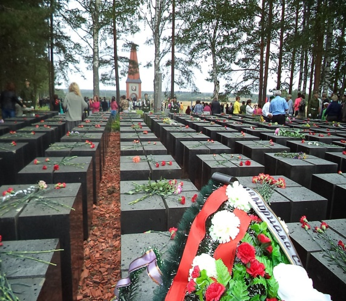
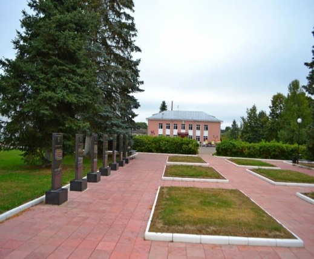
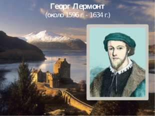
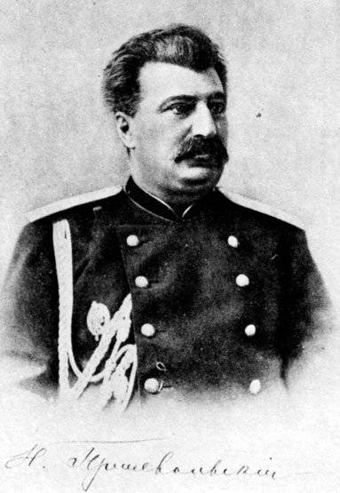
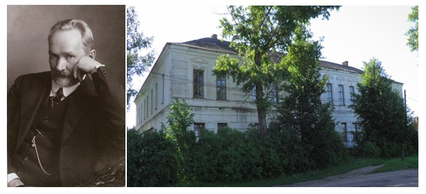
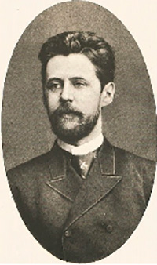
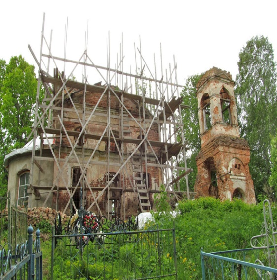
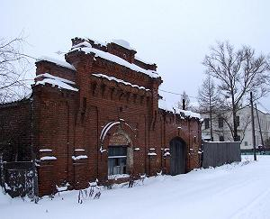
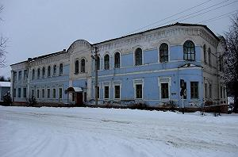

Белый
1. Память о погибших

Великая Отечественная война - это отдельная глава в истории края. Бельский район около двух лет (с июля 1941 по март 1943гг.) находился в центре ожесточенных боев и сражений. Город Белый стал важной точкой в Ржевско-Вяземской операции, которая получила название «Марс» и проведение которой было поручено двум фронтам - Калининскому и Западному. Судьба Сталинградской битвы во многом решалась и в окопах на Бельской земле. Дорогой ценой досталась победа Бельской земле. Сегодня о тех страшных годах напоминают 32 памятника и обелиска на территории района.
На территории района на воинских кладбищах и в братских могилах покоится прах 25 тысяч погибших советских воинов. Их число год от года увеличивается. Ежегодно поисковики находят на местах былых сражений и перезахоранивают останки советских солдат.
2. Мемориальный комплекс сибирякам у деревни Плоское

14 августа 1996 года в Длине смерти у деревни Плоское состоялось открытие Мемориального комплекса сибирякам, погибшим на фронтах Великой Отечественной войны. Сооружен он у братского захоронения, в котором покоится прах 12,5 тысяч воинов-сибиряков, по инициативе и на средства жителей Сибири. Ежегодно, 14 августа, здесь проходят торжественные поминальные мероприятия.

За ратные подвиги в годы Великой Отечественной войны восьми бельчанам присвоено звание Героя Советского Союза, двое стали полными кавалерами ордена Славы.
4. Гаврила Григорьевич Пушкин – предок А.С.Пушкина В 1606 году в крепость Белую был направлен воеводой Гаврила Григорьевич Пушкин ( ок.1560 — 1638) - предок А. С. Пушкина. — голова, воевода, сокольничий (1606) и думный дворянин (1606), действующее лицо пушкинской трагедии «Борис Годунов». Сын дворянина Григория Ивановича Пушкина.
5. Георг Лермонт - основатель рода Лермонтовых

В 1613 году при осаде крепости Белая перешел на русскую сторону предок другого великого поэта - шотландец Георг Лермонт - основатель рода Лермонтовых.
6. Н. М. Пржевальский

В 1856-1860гг. в Белом в составе Полоцкого пехотного полка служил будущий русский путешественник и исследователь-географ Н. М. Пржевальский.
7. Евгений Боратынский

В сельце Голощапове, родовом имении Боратынских, гостил у дяди Богдана Андреевича, юный поэт Евгений Боратынский. Именно здесь, на бельской земле родились его первые юношеские поэтические строки.
8. Святитель Николай (в миру Иван Дмитриевич Касаткин)

Белый - родина святителя Николая (в миру Иван Дмитриевич Касаткин), Архиепископа Японского, с именем которого связано утверждение Православия в Японии. Священный Синод Русской Православной Церкви 10 апреля 1970 года принял постановление о православии святителя Николая в лике святых, с именованием «равноапостольный». Сохранилось здание бывшего духовного училища, в котором учился святитель Николай. На нем установлена памятная мемориальная доска, а в 2013 году открыт памятник.
9. Д.А. Агренев-Славянский

В имении родителей – селе Дунаеве провел детские годы организатор и руководитель хора «Славянская капелла» Д.А. Агренев-Славянский (1834-1908).
10. Василий Васильевич Розанов

Русский философ, писатель, публицист Василий Васильевич Розанов два года преподавал историю и литературу в Бельской прогимназии, много работал над статьями, печатавшимися в «Русском обозрении» и «Русском вестнике». Здесь же им написана знаменитая статья «Сумерки просвещения», направленная против рутины гимназического обучения. Сейчас в этом здании находится филиал Нелидовского колледжа.
11. Поэт Иннокентий Анненский

Поэт Иннокентий Анненский регулярно на лето приезжал в имение своей жены - Сливицкое, расположенного в 5 километрах от города Белого. Пребывание здесь нашло отражение в его стихотворном творчестве.
12. Единственная историческая церковь Белого - на кладбище. Петропавловская, 1817 год

13. Памятник погибшим в городе евреям

14. Склады Хорошеева

Два складских корпуса, на главном выложена дата постройки – 1909, фасад украшен аттиком с рядами зубцов и фигурных кронштейнов
15. Здание женской гимназии

Здание женской гимназии, возведенное в 1870-1880-е годы и перестроенное в 1899, 1902 и 1910 годах. В одном из помещений первого этажа сохранились гофрированные своды.
16. Дом В.Грекова

Двухэтажный с полуподвалом жилой дом В.Грекова (конец XIX века) выходит на перекресток срезанным углом, украшенным полукруглым разорванным фронтоном. когда-то в центре на постаменте возвышался вазон.